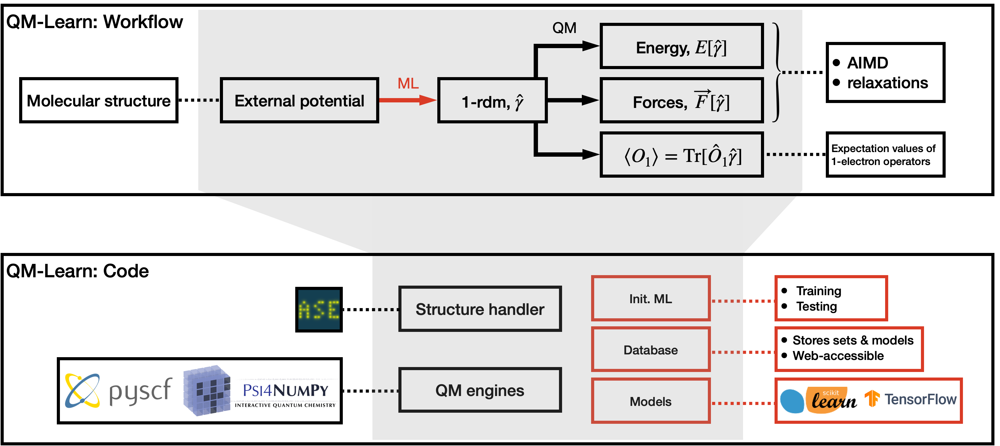

QMLearn builds surrogate electronic structure methods by learning one- and two-electron reduced density matrices in the atomic-orbital basis. From a single model you get energies, forces, orbitals, and energy-conserving AIMD.
Kernel models map the external potential to the 1-RDM (γ) or 2-RDM (Γ), including correlated (Γc) and cumulant (Δ) decompositions. Observables follow by contraction with integrals.
QMLCalculator plugs into ASE for geometry optimization and molecular dynamics. Energies and forces come from the predicted RDM, optionally with a second-learn correction.
Train on DFT, Hartree–Fock, CASCI, CCSD, or FCI via PySCF. The surrogate inherits the quality of the training method at a fraction of the cost.
Training geometries sample configuration space; QM engines fill an HDF5 database of potentials and RDMs; scikit-learn models learn the maps; ASE drives predictions and dynamics.

Load a trained model from an HDF5 database, attach the ASE calculator, and run NVE dynamics. The same pattern covers 1-RDM (gamma) and 2-RDM (gamma2, gamma2cum) models.
See the tutorials for training notebooks and water AIMD examples at 300 K.
from sklearn.kernel_ridge import KernelRidge
from qmlearn.io.model import db2qmmodel
from qmlearn.api.api4ase import QMLCalculator
from ase.build import molecule
from ase.md.verlet import VelocityVerlet
from ase import units
models = {'delta_gamma': KernelRidge(alpha=0.0, kernel='rbf')}
qmmodel = db2qmmodel('train.hdf5', mmodels=models,
target='delta_gamma', method='delta_gamma')
atoms = molecule('H2O')
atoms.calc = QMLCalculator(qmmodel=qmmodel, method='gamma',
properties=('energy', 'forces'))
dyn = VelocityVerlet(atoms, 0.5 * units.fs)
dyn.run(200)Scientific papers related to QMLearn